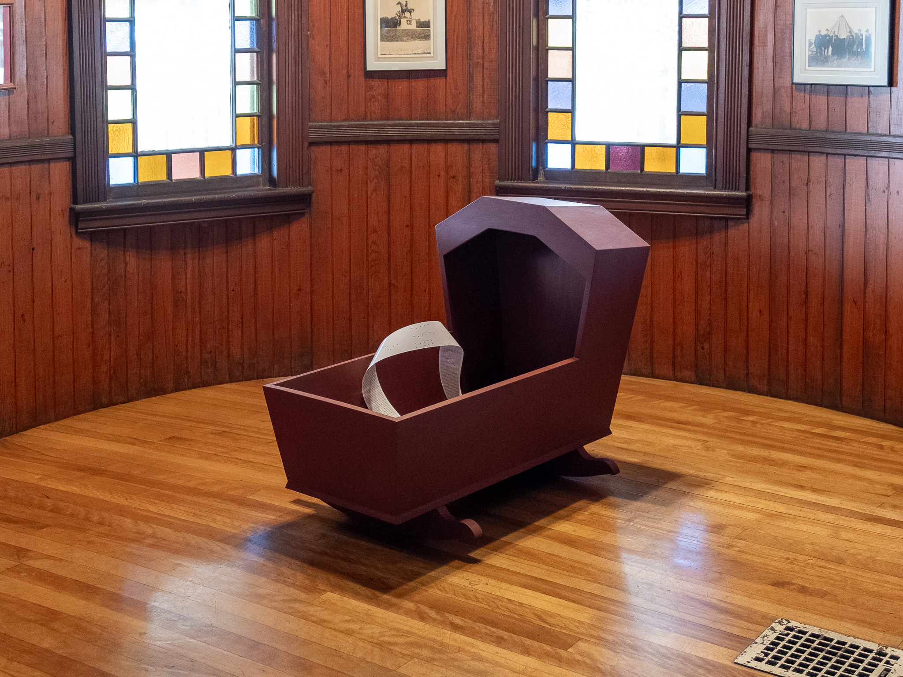
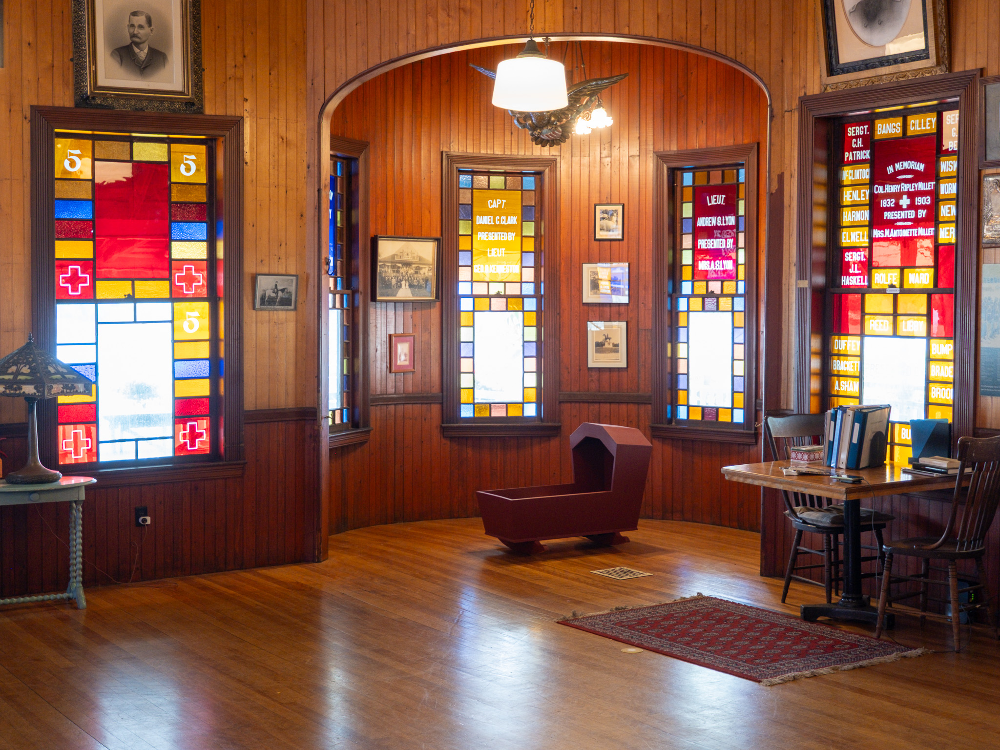
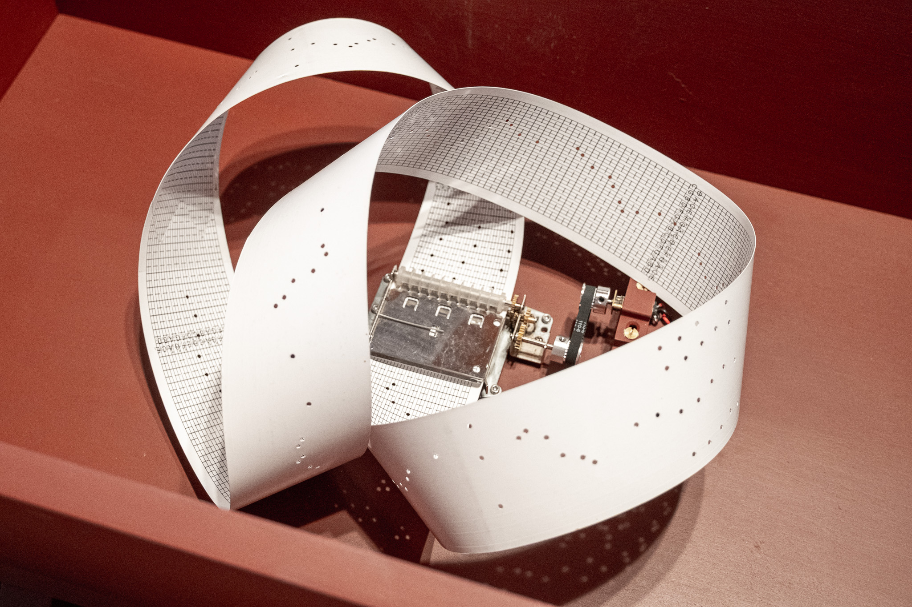

Pine, iron oxide milk paint, motorized music box movement, paper
This sculpture plays an arrangement of a single melody that has carried four distinct songs across three centuries: the hymn "Say Brothers," the Civil War song "John Brown's Body," Julia Ward Howe's "Battle Hymn of the Republic," and the 1915 labor anthem "Solidarity Forever." A motorized movement reads punched paper much like a player piano, translating this melody into sound.
The piece considers how song, memory, and labor are embodied, transmitted, and contested as they tumble through the turbid wake of history. The cradle form draws from an image of a cradle at John Brown's farm in Elba, New York, as well as contemporaneous Shaker designs. Cradles are a site of both rest and transmission. (A child's first music is often a lullaby, itself a work song.) Cradles are also morphologically similar to coffins, an ultimate site of rest beyond the mundane present.

